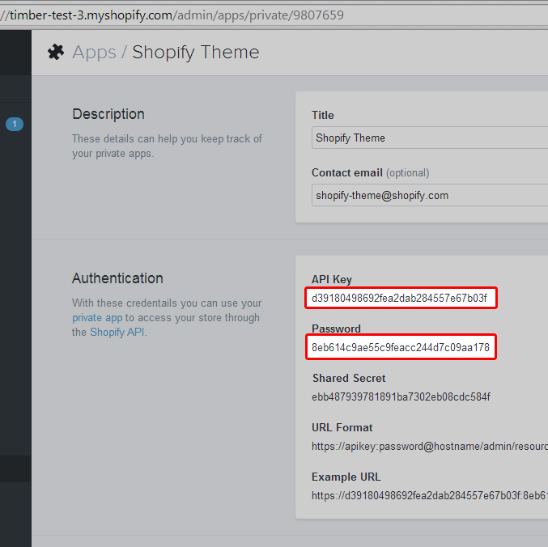

Targets are a means of directing where quickshot sends your files.
After executing quickshot configure you will be presented with the following menu:
? Main Menu: (Use arrow keys)
❯ Configure targets
Configure scss
Configure CoffeeScript
Configure ignore file
Save configuration and exit
Here’s a breif explaination of each option:
To configure your targets select “Configure targets” using your arrow keys and press enter. You will then see the following menu.
? Manage Targets: (Use arrow keys)
❯ Create Target
Edit Target
Delete Target
List Targets
Done Managing Targets
Select Create Target from the menu using the arrow keys.
You will then be asked for all of the following information:
Private Apps Settings?
If you’re wondering what those are, go to your-store.myshopify.com/admin/apps/private in your web browser. Click on “Create a Private App” to generate the credentials for a new app. Quickshot, will need the API Key and Password of this newly generated app:

Special Thanks to Shopify for letting me use some of their documentation
After configuring a target, you are returned to the Manage Targets menu. From there you can edit, delete, and display a list of all configured targets. If you are finished adding targets select Done Managing Targets to continue.
Select Edit Target if you’d like to edit an existing Quickshot target.
Select Delete Target if you need to remove a target from the Quickshot Configuration.
Select List Targets to display all of the exisiting targets configured for Quickshot.
Select Done Managing Targets if you’d like to return to the main Quickshot Menu.
A target is a specific theme at a specific shop.
Targets are a means of directing where quickshot sends your files.